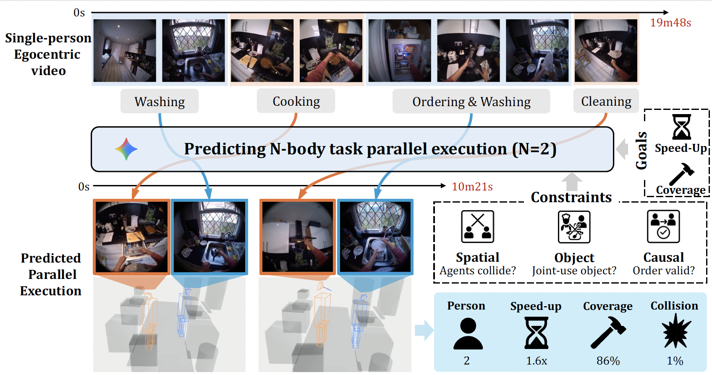

Humans can intuitively parallelise complex activities, but can a model learn this from observing a single person?
Given one egocentric video, we introduce the N-Body Problem: how N individuals, can hypothetically perform the
same set of tasks observed in this video.
The goal is to maximise speed-up, but naive assignment of video segments to
individuals often violates real-world constraints, leading to physically impossible scenarios like two people using the
same object or occupying the same space.
We formalise the N-Body Problem and propose a suite of metrics to evaluate both performance (speed-up, task coverage) and feasibility (spatial collisions, object conflicts and causal constraints).
We use structured prompting on Gemini Pro to reason about the 3D environment, object usage, and temporal dependencies to produce a viable parallel execution.
Interactive Demo (Move Between 1-Body [left] and 2-Body [right] Execution)
Single-Person Video
Parallel Execution (N=2)
Video Demo
Citation
@misc{zhu2025nbody,
title={The N-Body Problem: Parallel Execution from Single-Person Egocentric Video},
author={Zhifan Zhu and Yifei Huang and Yoichi Sato and Dima Damen},
year={2025},
eprint={2512.11393},
}